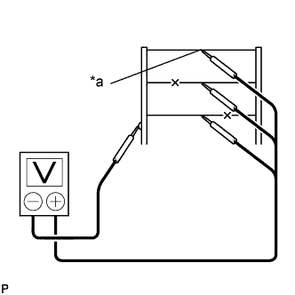

НИТИ ОБОГРЕВАТЕЛЯ СТЕКЛА > ПРОВЕРКА БЕЗ СНЯТИЯ С АВТОМОБИЛЯ |
| 1. ПРОВЕРЬТЕ СТЕКЛО ОКНА ДВЕРИ БАГАЖНОГО ОТДЕЛЕНИЯ (НИТИ ОБОГРЕВАТЕЛЯ) |
| *1 | Нити обогревателя стекла |
| *2 | Станиоль |
| *3 | Щуп портативного диагностического прибора |
Установите замок зажигания в положение ON (ВКЛ).
Включите выключатель обогревателя стекла.
|  |
Измерьте напряжение в центре каждой нити обогревателя стекла, как показано на рисунке.
| Напряжение | Вывод |
| Приблизительно 5 В | Нить не оборвана |
| Приблизительно 10 или 0 В | Обрыв нити |
| *a | Центр |
Приложите положительный (+) вывод вольтметра к нити обогревателя стекла со стороны аккумуляторной батареи.
Приложите отрицательный (-) вывод вольтметра с полоской фольги к нити со стороны массы.
Сдвиньте положительный (+) вывод от аккумуляторной батареи в сторону массы.
Точка, в которой показание вольтметра упадет с приблизительно 10 В до 0 В, является местом разрыва нити обогревателя.
| *a | Со стороны массы |
| *b | Полоска фольги |
| *c | Приблизительно 10 В |
| *d | 0 В |
| *e | Нить с обрывом |
| *f | Сторона аккумуляторной батареи |